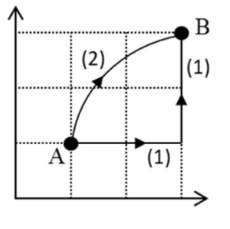

Qüestió JL19
Expliqueu breument què és un camp de forces conservatiu. Una càrrega positiva es troba en el si d'un camp electrostàtic. El treball realitzat pel camp per a desplaçar-la entre els punts A i B de la figura és de 0,01 J si se segueix el camí (1) Quin és el treball si se segueix el camí (2)? En quin punt, A o B, és major el potencial elèctric? Raoneu les respostes.